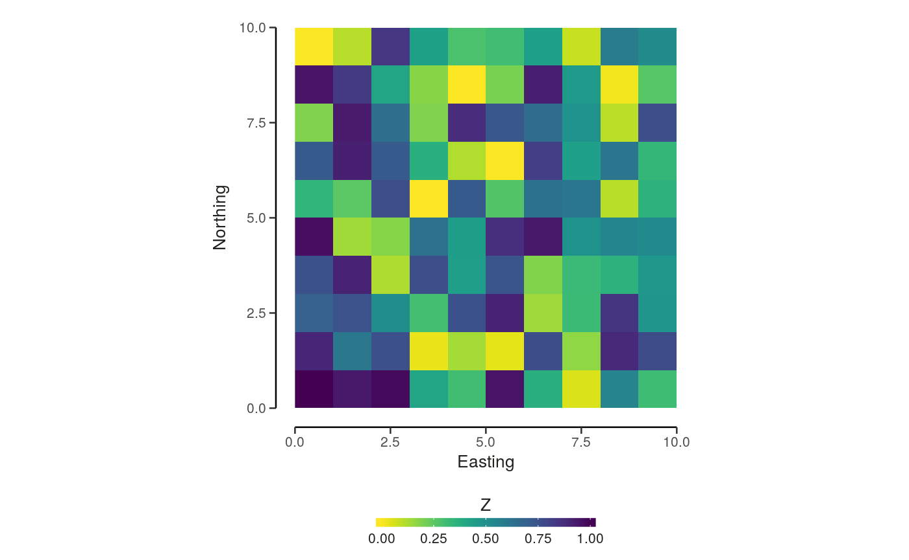
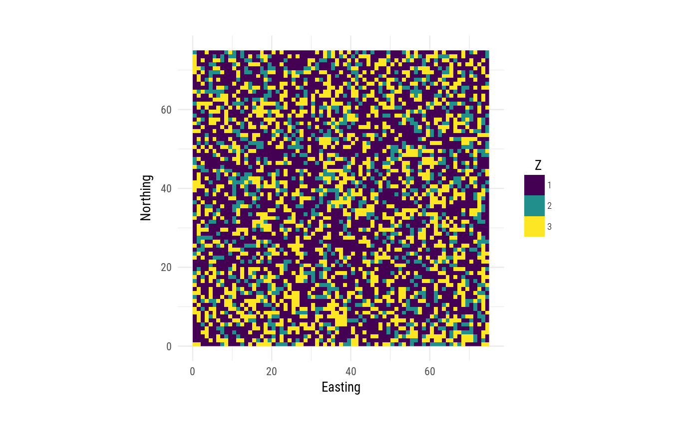

Plot a Raster* object with the NLMR default theme
util_plot(x, scale = "A", discrete = FALSE, legendposition = "bottom", legendtitle = "Z")
| x | [ |
|---|---|
| scale | [ |
| discrete | [ |
| legendposition | [ |
| legendtitle | [ |
ggplot2 Object
# With classified data y <- c(0.5, 0.15, 0.25) nlm_raster <- util_classify(nlm_raster, y) util_plot(nlm_raster, scale = "D", discrete = TRUE)